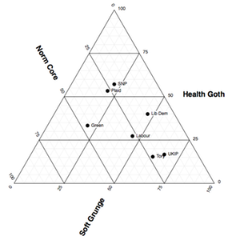

Tom Pearson
Maps, charts & visual explanations
I make graphics for the Financial Times. Before this I did the same for the BBC News website. Before that I made gallery information systems for the Natural History Museum.
Here are some examples of things I've made


